| 日付 | 2026年1月12日（月） |
|---|---|
| 山域 | 高尾周辺 |
| メンバー | 単独 |
| 山行形態 | 日帰り |
| アクセス | 電車、バス |
| ルート (Map) | 上川乗 (7:51) - (8:42) 浅間峠 - (9:30) 熊倉山 - (10:01) 生藤山 - (11:20) 醍醐丸 - (11:49) 和田峠 - (12:11) 陣馬山 (12:27) - (13:05) 陣馬新道口 - (13:20) 陣馬高原下 |
三頭山～高尾山を結ぶ長大な尾根は笹尾根と名付けられている。
三頭山～浅間峠、陣馬山～高尾山は過去に歩いたことがあるが、
浅間峠～陣馬山の間の稜線はほとんど歩いたことがない。
今回は、笹尾根のこの未踏の区間を歩いてみることにする。
上川乗バス停に到着。標高410m。
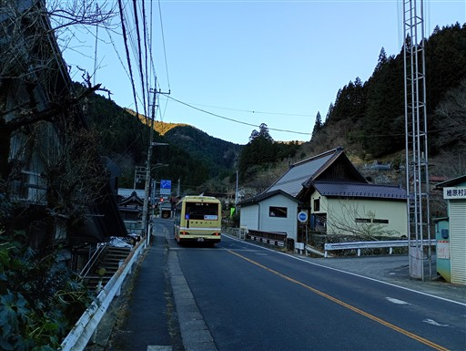
少し車道を歩くと登山口に到着する。
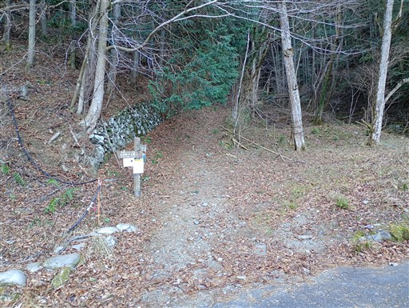
この辺りは植林地帯が続く。稜線までは少し速足で歩く。
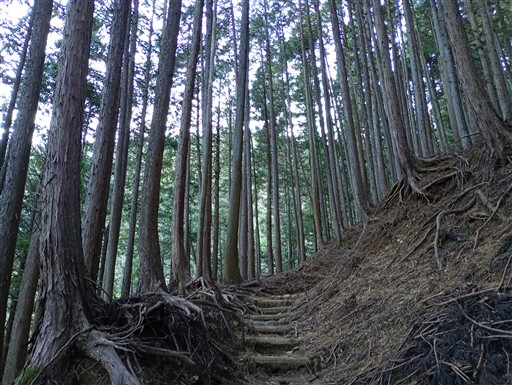
急斜面を登っていくと、登山道は尾根に乗る。
その場所に祠がある。
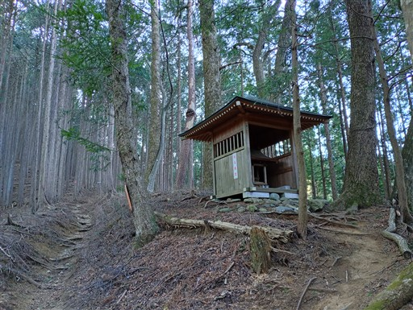
暗い植林地帯を抜けて、明るい落葉樹林帯になる。
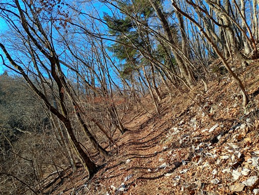
浅間峠に到着。
以前、槇寄山～浅間峠を歩いた時にこの場所を通過したはずだが、あまり記憶がない。
広い峠には立派な東屋が建っている。
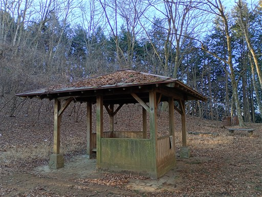
温度計の表記を信じるなら氷点下5度。
寒いけれど、風がないのでそこまでの寒さは感じない。
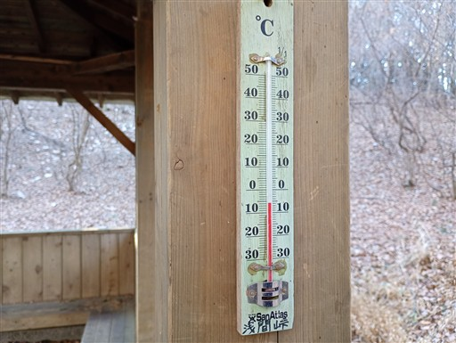
大木二本の間に、小さな祠が祀られている。
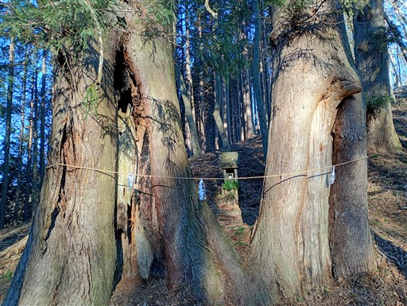
ここからは笹尾根の主稜線歩き。落葉樹が広がる森の中を歩いていく。
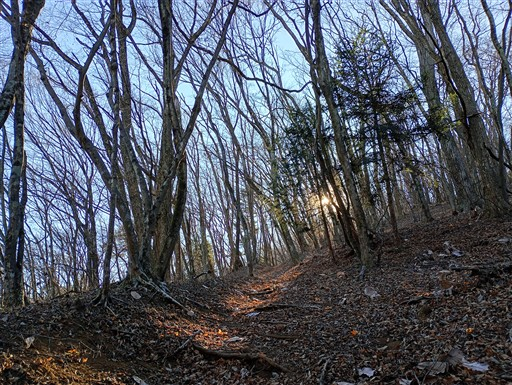
頭上注意と書かれた木が倒れている。
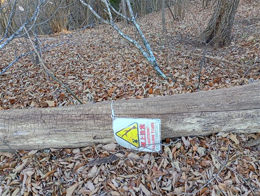
ゆるやかなアップダウンが続く歩きやすい尾根道だ。
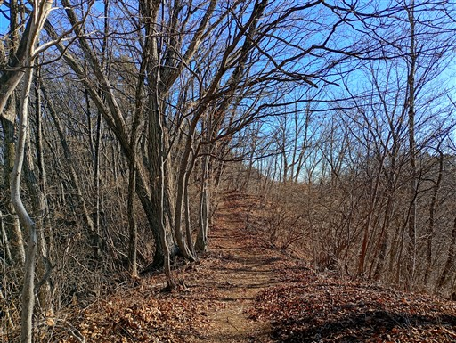
熊倉山に到着。標高966m。
三角形状にベンチが置かれている。
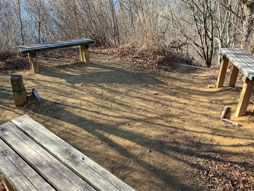
さらに進むと黒々とした森が現れる。
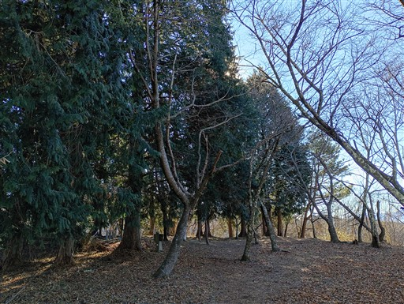
軍荼利神社元社だ。
以前、生藤山に登ったときはここまで来たことがあり、久々の訪問。
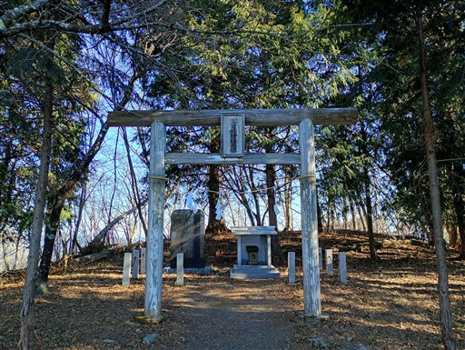
その少し先にある三国山。小ピークだが、東京、神奈川、山梨の交点だ。
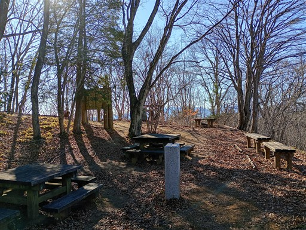
木の隙間から、遠くに南アルプスが見えている。
以前は軍荼利神社からも、三国山からも、きれいに富士山が見えたのだが
今では木が成長して見えなくなってしまっている。
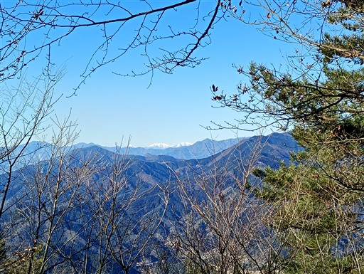
お隣の生藤山に到着。標高990m。
人気の山だが、誰もいない。
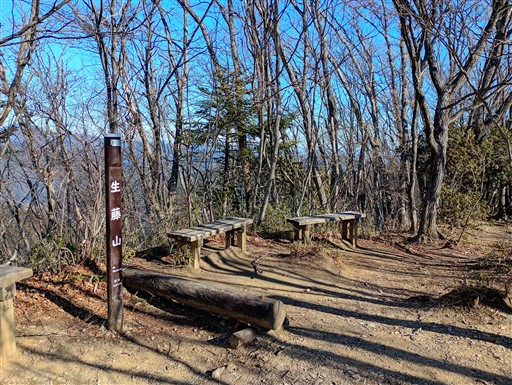
ここからも富士山が見えたはずだが、今ではすっきりと見通せない。

側にある防火水のドラム缶は落ち葉が大量に積もり、そして水は完全に凍り付いている。
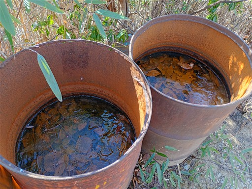
生藤山から先は道がだいぶ細くなる。歩く人が少ないのだろうか？
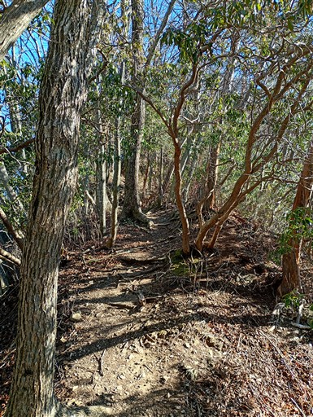
少し岩がちな尾根。
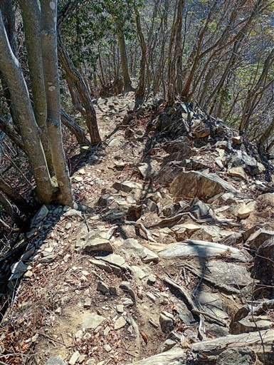
ところどころで出てくる巻道。
基本的に巻道は選ばず、全ピークを経由していく。
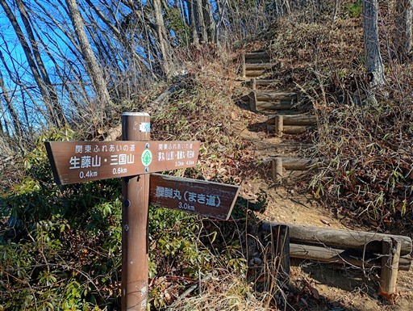
茅丸に到着。標高1019m。本日の最高峰だ。
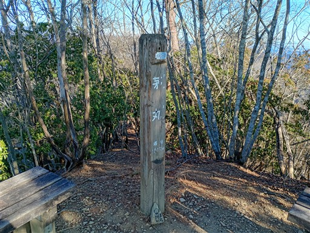
このピークは展望が良い。富士山がきれいに見えている。
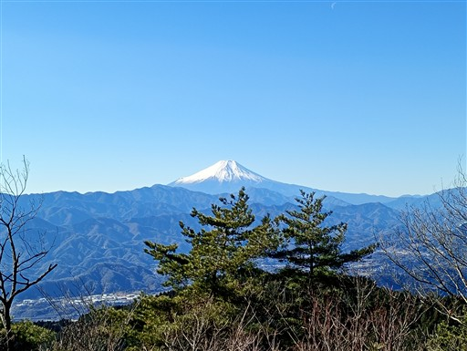
こちらは丹沢の山々。大山、蛭ヶ岳、檜洞丸などが見えている。
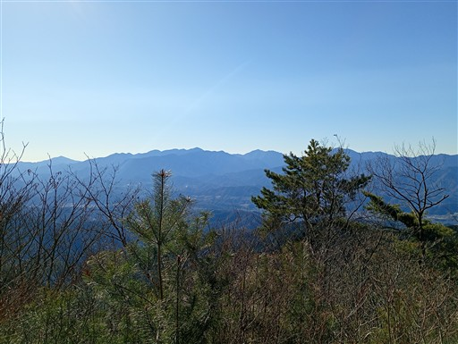
稜線歩きは続く。
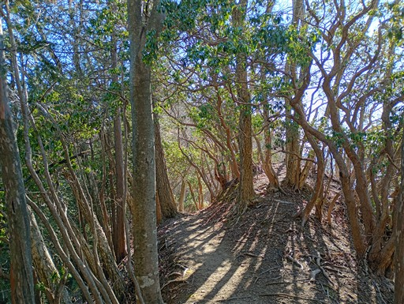
連行峰を通過。
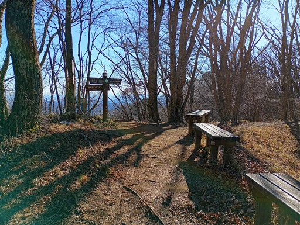
ほとんど展望の広がらない尾根だが、冬は木の隙間からずっと富士山が見える。
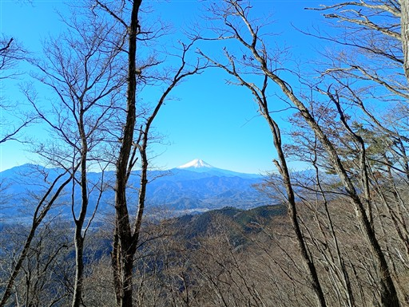
醍醐丸に到着。標高867m。
この辺りから稜線は植林地帯になる。

なぜかこんなところにガードレールがある。
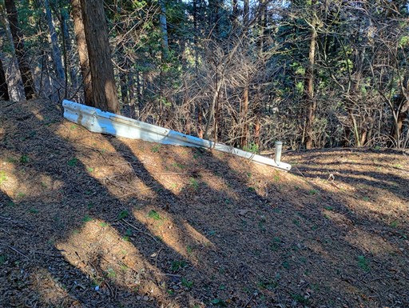
「近くにハイキング道路あり」と言うよりここがハイキング道路なのだが…
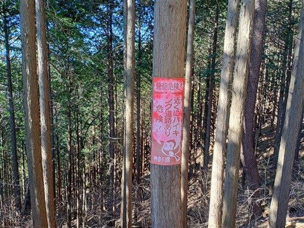
道端にある石祠。峠でも何でもない場所で、なぜここにあるのか謎だ。
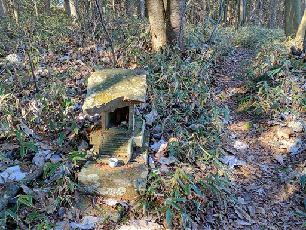
車道に下り立つ。ここで登山道が一旦途切れてしまうのが残念だ。
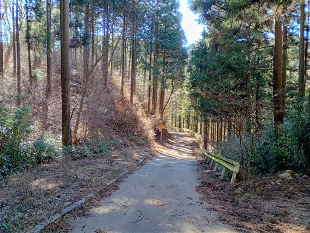
和田峠に到着。標高687m。
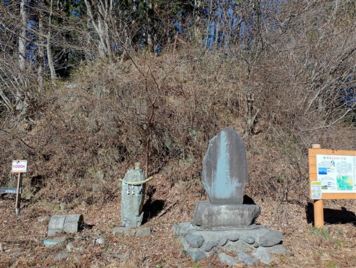
ここには大きな駐車場がある。
以前、息子が2歳のときに、ここから陣馬山を往復したことがある。
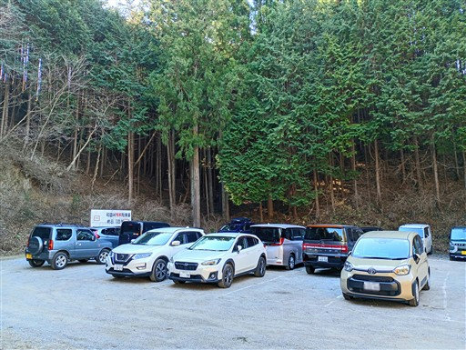
ここからは急斜面の階段登りになる。
階段は以前と比べてかなり整備されている。

和田峠まではほとんど人と出会わなかったのに、ここからは大勢の登山者とすれ違う。
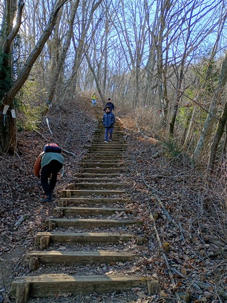
明るい山頂が見えてきた。
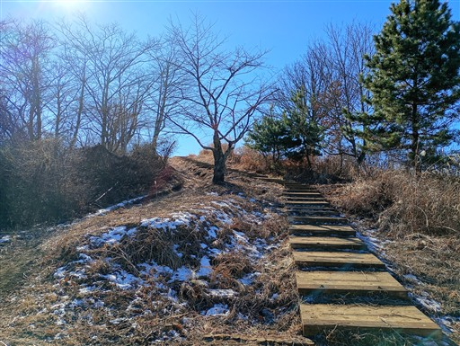
陣馬山に到着。標高855m。
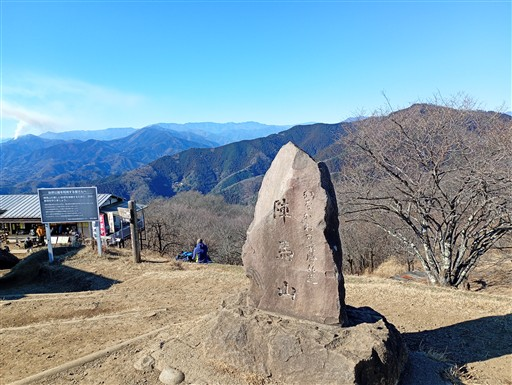
陣馬山のシンボル、白馬の像。
だいぶ汚れており、そろそろ塗り替えが必要そうだ。
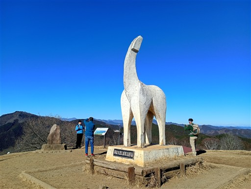
山頂ついてまず目についたのが扇山の山火事。
ものすごい勢いで煙が出ている。被害が大きそうで心配だ。
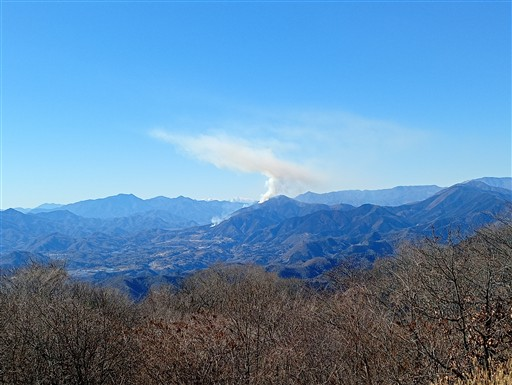
富士山がきれいに見えている。
陣馬山に来るのはこれで5回目だが、ここまで綺麗に晴れたのは初めてだ。
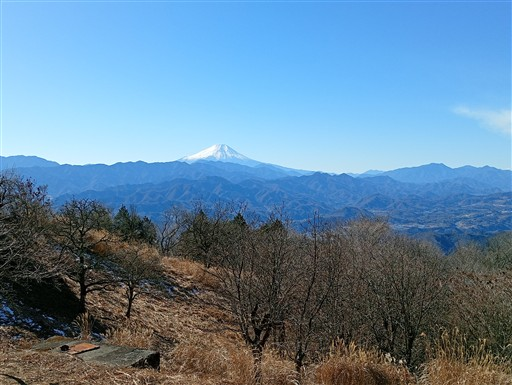
広い山頂は多くの登山者で賑わっている。
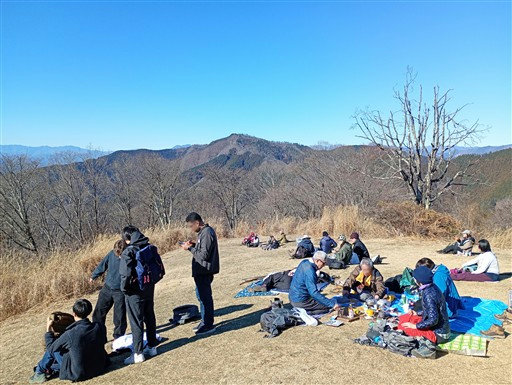
こちらの店は営業していないようだ。廃業したのだろうか？
山頂から富士山が見える一等地に建っているので、
営業しないのならば建物を撤去してほしいところだ。
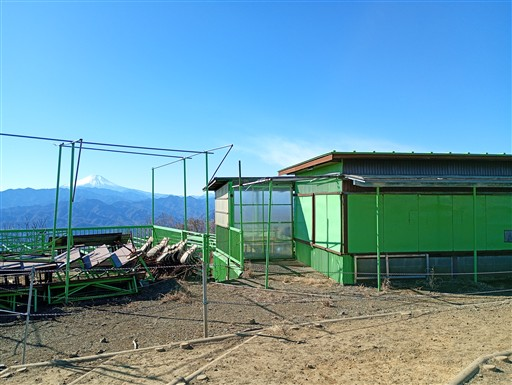
信玄茶屋は営業しており、多くの人で賑わっている。
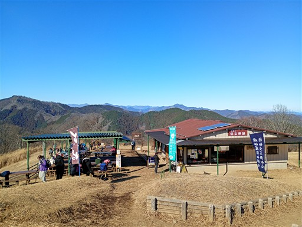
ほぼ360度の展望が得られる。遠くに薄っすら見えているのは筑波山。
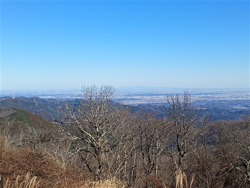
白く見えるのは日光の山々。
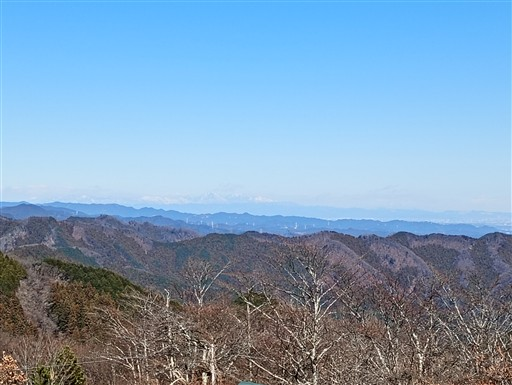
富士山と山火事。
展望を堪能したら下山を開始する。
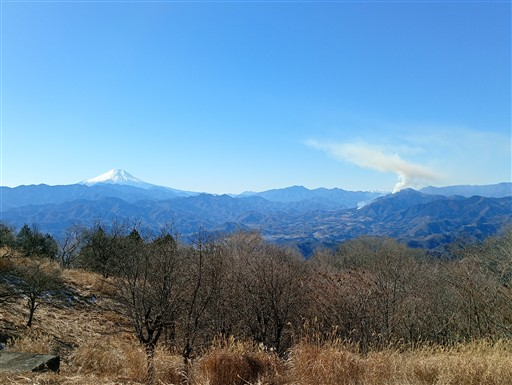
下山は陣馬高原下に至る道を選択。
初めて陣馬山に登ったときに、登りに使った道だ。
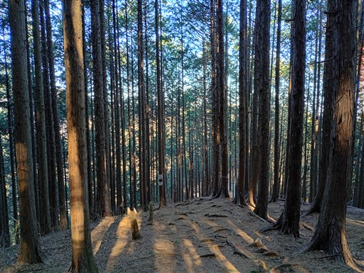
沢沿いに下りてくる。ほとんどが植林地帯の中の道だ。
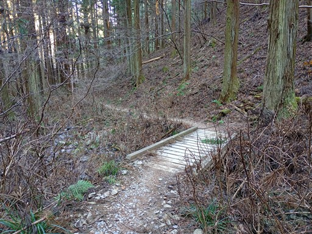
下山。ここからしばらく車道歩き。
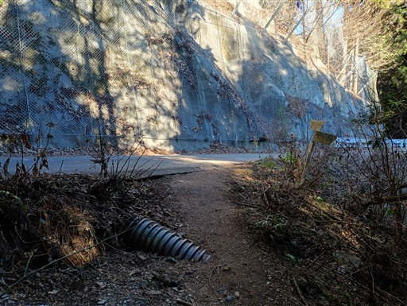
バスの時刻なので、歩いている人はそこそこいる。
1時間に一本なので、バスの本数は多めだ。
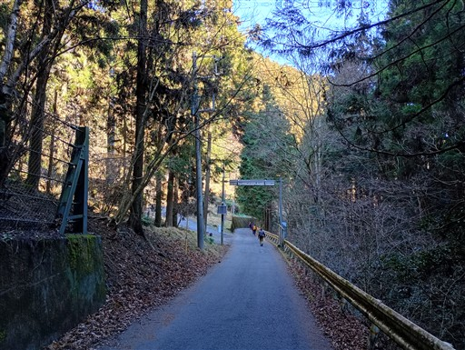
陣馬高原下バス停に到着。標高330m。
今回歩いたコースは、静かで、歩きやすく、良い道だった。
展望はあまり広がらなかったが、その分、陣馬山で大展望が得られるので、
なかなかの名コースだと思う。
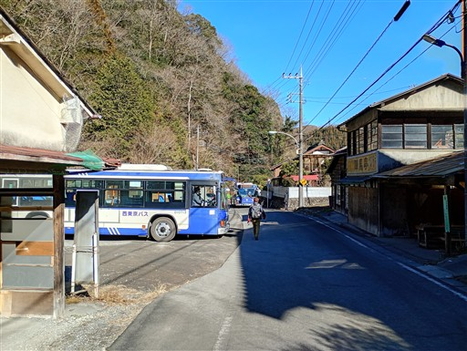